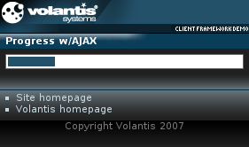

A Progress Bar widget provides a visual indication of the amount of a process that has been completed and the amount that remains. It operates in one of two modes, active and passive. In active mode the widget periodically queries the server to obtain the latest percentage complete state. In passive mode widget waits for one of its JavaScript methods to be called.
Here we will demonstrate how to create an active progress bar using the refresh action. Please see Showing progress to learn about the passive Progress Bar widget.

<widget:progress id="myProgressBar"> <widget:refresh id="refresh" src="service/progress" interval="4"/> </widget:progress>
<widget:refresh id="refresh" src="service/progress" interval="4"/>
<response:response xmlns="http://www.w3.org/2002/06/xhtml2"
xmlns:mcs="http://www.volantis.com/xmlns/2006/01/xdime/mcs"
xmlns:response="http://www.volantis.com/xmlns/2006/05/widget/response">
<response:head/>
<response:body>
<response:progress>50</response:progress>
</response:body>
</response:response>
<?xml version="1.0" encoding="UTF-8"?>
<html xmlns="http://www.w3.org/2002/06/xhtml2"
xmlns:mcs="http://www.volantis.com/xmlns/2006/01/xdime/mcs"
xmlns:widget="http://www.volantis.com/xmlns/2006/05/widget"
xmlns:template="http://www.volantis.com/xmlns/marlin-template">
<head>
<title>Progress Indicator Widget</title>
<link rel="mcs:theme" href="/themes/main.mthm"/>
<link rel="mcs:theme" href="/themes/progressbar.mthm"/>
<link rel="mcs:layout" href="/layouts/main.mlyt"/>
</head>
<body id="body">
<template:apply href="templates/demo-main.xdtpl">
<template:binding name="title" value="Progress w/AJAX"/>
<template:binding name="content">
<template:complexValue>
<widget:progress id="progressBar" class="widget">
<widget:refresh id="refresh" src="service/progress" interval="4"/>
</widget:progress>
</template:complexValue>
</template:binding>
</template:apply>
</body>
</html>| Name | Purpose |
|---|---|
| response:progress | Allows the Progress Bar widget to refresh the operation percentage value. |
| widget:progress | The main element for a Progress Bar widget. |
| widget:refresh | Allows a widget to update its contents. |
| Core attributes | Attributes that are common to XDIME 2 elements. |